Blender Grease Pencil · Multimedia 12 · Sprint 7 · Lessons 1–10 · animation and virtual production, part 2
2D ANIMATION STUDIO.
Animate the way Toon Boom Harmony studios do, in Blender: a bouncing ball, your own character, a walk cycle, and lip sync with a mouth chart, finished as a shot with sound.
The demo shot: Pip walks into the night market, then the camera cuts to a close-up as he calls his line. Every frame is a real Grease Pencil drawing made with this sprint’s steps.
Ball. Walk. Talk.
The three classic animation tests, done the Harmony way: layers, exposures on twos, onion skin, a palette, a mouth chart and drawing substitution. Pass three Animation Desk checks as you go.
My supports
Turn on any help you want. Your teacher may have set some for you. They change how the guide helps, not what is assessed.
Studio brief
Paper Moon’s character test.
Paper Moon is casting a new character for a short. Every artist submits the studio’s three-part test: a bouncing ball, a walk cycle, and a short line of dialogue with lip sync, finished as one shot with sound. You design your own character, then the director gives you a note.
You will hand in
Bouncing ball loop (Check 1)
Model sheet image and walk cycle (Check 2)
PaperMoon_YourName_v2.blend and the final MP4 with sound (Check 3)
Xsheet and a three-sentence explanation of the director’s note
What’s next
Sprint 8: design a world in Blender and put yourself into it on the green screen, the way Drifting Walnut and Ian Hubert make their shots.
Most TV 2D animation is made in Toon Boom Harmony. Animators work in layers, expose drawings on twos on an Xsheet, check spacing with a light table, paint from a colour model, and lip sync by swapping drawings from a mouth chart. Studios test new animators with exactly these three exercises: ball, walk and dialogue.
Blender Grease Pencil is free and is used for festival shorts and feature-film storyboards. Every skill here transfers directly to Harmony.
Knowledge first
The ideas that make 2D animation work.
Timing and spacing
Timing is how many frames an action takes; spacing is how far apart the drawings are. Close together is slow, far apart is fast. At 24 fps, animating on twos means 12 drawings per second.
Squash and stretch
Shapes squash on impact and stretch when fast, keeping the same volume.
The walk
Contact, down, passing, up — twice per cycle. Arms swing opposite to the legs; loose parts drag behind (follow-through).
Lip sync
Speech is broken into sounds (phonemes) and matched to a small set of mouth shapes. Mouths usually change a frame before the sound; the stressed word gets the biggest shape.
Design principles in the shot
Contrast: Pip’s warm orange and teal against the cool night market. Emphasis: the close-up makes the line the focus. Movement: the walk leads the eye into the frame; the cut takes us closer. Unity: one palette and one line weight in every drawing.
What this assesses
Skills you will show.
Skill (sprint skill ID)
Where you show it
Navigate and set up Blender · BL-NAV-01
Steps 1–2
Hierarchy and emphasis · GD-HIE-01 · Audience · GD-AUD-01
Critique and refinement · GD-CRIT-01 · Representation · GD-REP-01
Step 16 (director’s note) and the screening
Animation craft (timing, spacing, walk, lip sync)
Checks 1–3 (steps 4, 10, 17)
Primary achievement evidence: the director’s note (practical check) and Check 3. Guided steps, supports and checks are recorded separately from achievement. Sprint mm12-26-s07; outcomes 4.1–4.5. The registry has no dedicated 2D animation skill IDs yet, so animation craft is observed through the checks.
Session A · Lesson 1 · mm12-26-s07-d01
Set up the 2D studio.
Paper Moon is a small 2D studio. Over ten lessons you animate the same way Harmony animators do: ball, walk, lip sync, then a finished shot with sound.
TODAYSet up and Harmony-to-Blender map (25 min), drawing tools, strokes and fills (40 min).
01
Set up a 2D Animation file and learn the studio layout
IN SHORTNew 2D Animation file; find the parts; project folder; Harmony map; watch the demo.
READ ALOUD
DOCUMENT: Blender 5.2 · PaperMoon_YourName.blend SELECT: The 2D Animation workspace TOOLS / ROUTE: File › New › 2D Animation · File › Save As
Choose File › New › 2D Animation. You get a camera, a paper canvas, a Grease Pencil object called Stroke, and a Dope Sheet at the bottom.
Grease Pencil: Blender’s 2D drawing and animation object
Draw Mode: The mode for drawing strokes in Grease Pencil
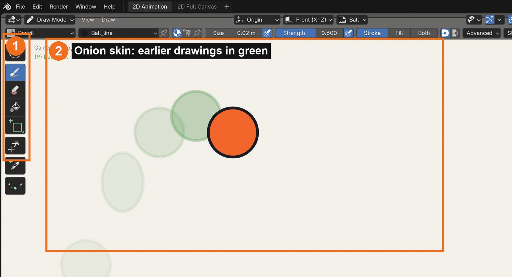
Real Blender screenshot: the 2D Animation workspace in Draw Mode. Toolbar (1); onion skin shows the earlier drawings in green (2).
WHYHarmony and Blender use the same ideas: layers, exposures, onion skin, palettes and drawing swaps. Learn the ideas and either tool makes sense.
CHECKA saved 2D Animation file in your project folder, and you can point to the Draw tools, brush shelf and Dope Sheet.
FIXStarted in a 3D file? File › New › 2D Animation gives the right workspace. Can’t draw? Check the header says Draw Mode.
WORKED EXAMPLE · DIFFERENT OBJECTIn the demo pack, Pip_Demo_Shot.blend has every technique from this sprint in one 9-second shot.
STRETCH (AFTER THE CHECK PASSES)Open the 2D Full Canvas workspace tab and compare it with 2D Animation.
Method basis: S1 · T1. Values and sequence are authored for this project.
02
Draw with strokes and fills, and set up a colour palette
IN SHORTPencil and F for size; materials for line and fill; Fill tool; Erase; three objects.
READ ALOUD
DOCUMENT: PaperMoon_YourName.blend SELECT: The Stroke object; materials TOOLS / ROUTE: Draw tool · Erase · Fill tool · Material slots (Stroke / Fill) · F (size)
In Draw Mode, draw with the Pencil brush. Press F to change the size; try Strength and pressure on a tablet.
In Material Properties, make a palette: Line (black stroke), Skin, Hoodie, Pants, Shoe. Each material has a Stroke colour and a Fill colour.
Draw a closed circle with Line. Choose Skin, then use the Fill tool and click inside it: the fill sits under your line.
Use Erase to clean a mistake; Ctrl/Cmd+Z undoes a stroke.
Draw three simple objects (a cup, a lantern, a star) with line and fill.
STEP CHECKLIST
GLOSSARY
Stroke: A drawn line
Fill: Colour inside a closed shape
Material: A named colour (stroke and fill) in Blender
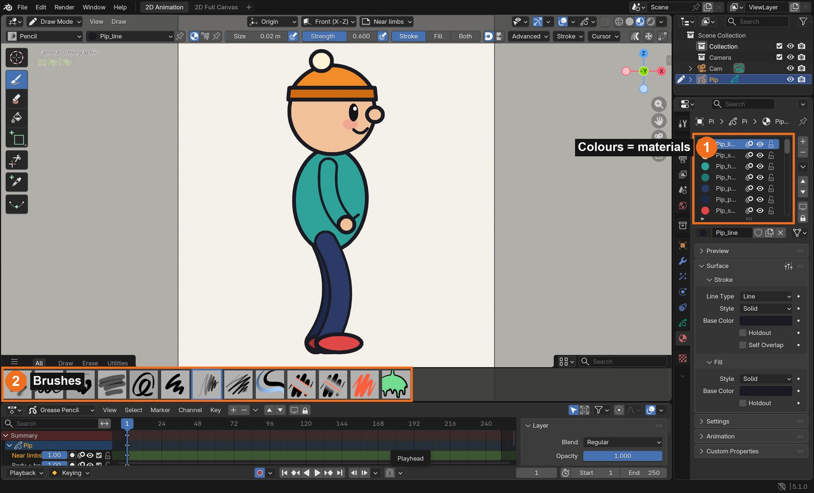
Real screenshot: Pip’s palette. Each colour is a material (1); the brush shelf (2) holds Pencil, Ink, Marker and more.
WHYHarmony calls this a colour palette. Using named colours means you can change Pip’s hoodie colour once and every drawing updates.
CHECKA named palette of at least five materials, and three objects drawn with clean lines and fills.
FIXFill leaks into the background? Your line has a gap: close it, or raise the Fill tool’s Leak Size. Fill on top of the line? Draw the line on a layer above.
WORKED EXAMPLE · DIFFERENT OBJECTPip’s palette: Line, Skin, Hoodie, Hoodie (far), Pants, Shoe, Beanie, Band, Pom-pom, Cheek.
STRETCH (AFTER THE CHECK PASSES)Try the Tint tool to shade one side of your lantern.
Method basis: B4. Values and sequence are authored for this project.
Session B · Lesson 2 · mm12-26-s07-d02
The bouncing ball. Check 1.
Every animator starts with a ball: it teaches timing, spacing, squash and stretch in one exercise.
TODAYKeys on twos with onion skin (30 min), spacing, squash and stretch (35 min). Check 1.
03
Animate a bouncing ball on twos with onion skin
IN SHORTGround and Ball layers; Auto Keying; onion skin; keys at 1, 13, 23; in-betweens on twos.
READ ALOUD
DOCUMENT: New layer: Ball SELECT: One ball drawing per key TOOLS / ROUTE: Auto Keying (●) · Dope Sheet · Overlays › Onion Skin
Add a layer Ground and draw a line; add a layer Ball above it.
Turn on Auto Keying (the ● button in the Dope Sheet/Timeline) so drawing on a new frame makes a new drawing.
Turn on Overlays › Onion Skin. Draw the ball high on the left at frame 1, on the ground at frame 13, and high again (lower) at frame 23. These are the keys.
Fill in the drawings in between on every second frame (3, 5, 7…): that is animating “on twos”, the Harmony and TV standard.
Press Spacebar. In the Dope Sheet, each diamond is one drawing, held for two frames.
Real Blender render: the 12 drawings on twos stacked together, with frame numbers. Close together at the top, far apart near the ground.
WHYTiming (how many frames) and spacing (how far apart each drawing is) are what make motion feel real. Twos halve the drawing work and give a classic 2D feel.
CHECKA ball that bounces twice in 24 frames with 12 drawings on twos, slowing at the top and speeding up near the ground.
FIXDrawing replaces the old one instead of making a new key? Turn on Auto Keying. Ball floats? Space the drawings wider near the ground.
WORKED EXAMPLE · DIFFERENT OBJECTThe demo ball: 12 drawings, 24 frames, second bounce 60 % of the first.
STRETCH (AFTER THE CHECK PASSES)Make the ball travel into the distance on the second bounce by drawing it smaller.
Method basis: B3 · B5 · V1. Values and sequence are authored for this project.
04
Add squash and stretch, then pass Check 1
IN SHORTSquash on contact; stretch on fast frames; keep volume; retime in Dope Sheet; Check 1.
READ ALOUD
DOCUMENT: Ball layer SELECT: The contact and the fast frames TOOLS / ROUTE: Draw over · Onion skin · Dope Sheet (G to move keys)
On the contact frame, redraw the ball squashed: wider and flatter, touching the ground.
On the fast frames either side of contact, redraw it stretched along the direction of travel.
Keep the volume the same: if it gets wider, it gets shorter.
Play it. If the bounce feels slow, move keys closer together in the Dope Sheet (select, G); if it feels fast, spread them.
Check 1: show your teacher the loop. They check timing, spacing, squash and stretch.
STEP CHECKLIST
GLOSSARY
Squash and stretch: Changing shape to show weight and speed, keeping volume
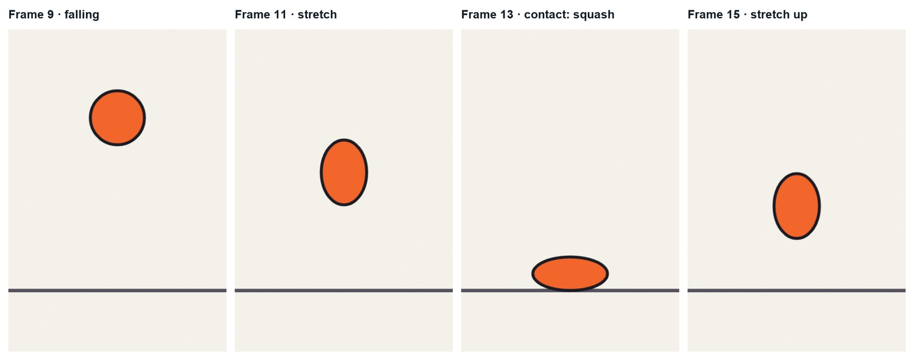
Real renders of four frames around the contact: falling, stretch, squash on contact, stretch as it leaves.
WHYSquash and stretch give weight and flexibility. They are the first principle of animation and appear in every Harmony studio test.
CHECKA squash on contact, stretch on the fast frames, no change in volume, and a teacher-signed Check 1.
FIXBall looks like it changes size? Make it the same area: wider = shorter. Stretch looks odd? Stretch along the path, not straight up.
WORKED EXAMPLE · DIFFERENT OBJECTThe demo squash is 138 % wide and 62 % tall on the contact frame.
STRETCH (AFTER THE CHECK PASSES)Animate a heavy bowling ball and a light beach ball side by side.
Method basis: V1. Values and sequence are authored for this project.
Session C · Lesson 3 · mm12-26-s07-d03
Design the character: rough, line, colour.
Harmony animators design with a rough layer, clean it on a line layer, and paint underneath. You will design your own character the same way.
TODAYRough to clean model sheet (35 min), colour and layers (30 min).
05
Design your character: rough, then clean line
IN SHORTRough in blue; lower opacity and lock; clean line on three layers; side and front; hide rough.
READ ALOUD
DOCUMENT: New file or new object: YourCharacter SELECT: Rough layer and Line layers TOOLS / ROUTE: Layers panel · Layer opacity · lock (padlock) · Onion off
Add a layer Rough. With a light blue material, sketch loose circles and a bean shape for the body, plus a centre line and an action line.
Lower the Rough layer’s Opacity to about 0.4 and lock it (padlock).
Add layers Far limbs, Body + head and Near limbs above it. Trace a clean, confident line over the rough on the right layer.
Draw a side view (for the walk) and a front view (for lip sync). Keep shapes simple: circles, beans and tubes.
Hide the Rough layer to check your clean line.
STEP CHECKLIST
GLOSSARY
Model sheet: Reference drawings that keep a character consistent
Action line: One curve that shows the pose’s energy
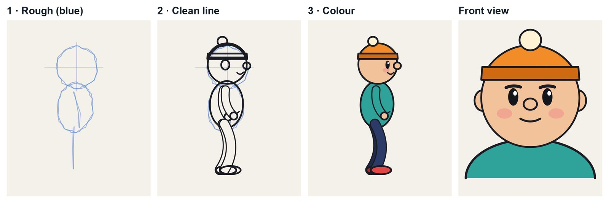
Real Blender renders of Pip’s model sheet: rough in blue, clean line, colour, and the front view for lip sync.
WHYThe rough keeps the drawing alive; the clean line makes it consistent across hundreds of drawings. Splitting far, body and near parts lets limbs pass behind and in front.
CHECKA rough layer and a clean side and front view of your own character on three layers.
FIXLines wobbly? Use the Ink brush and draw faster in longer strokes; Smooth in the brush settings helps. Can’t see the rough? Raise its opacity.
WORKED EXAMPLE · DIFFERENT OBJECTPip is a circle head, a bean body, rubber-hose tube limbs and a beanie with a pom-pom.
STRETCH (AFTER THE CHECK PASSES)Add a three-quarter view to your model sheet.
Method basis: B2 · S1. Values and sequence are authored for this project.
06
Colour your character and organise the layers
IN SHORTFill each part; darker far side; order layers; name everything; save a still.
READ ALOUD
DOCUMENT: YourCharacter SELECT: Colour fills under the line, on each part TOOLS / ROUTE: Fill tool · materials · layer order (drag) · layer colour
On each part’s layer, use the Fill tool with your palette materials: skin, hoodie, pants, shoes.
Give the far limbs a darker version of each colour (Hoodie far, Pants far). It reads as depth and is what Harmony animators call a colour model.
Check the layer order: Far limbs at the bottom, Body + head, Near limbs on top.
Name every layer and every material clearly.
Save a still of the model sheet: F12, then Image › Save As.
STEP CHECKLIST
GLOSSARY
Colour model: The approved colours for every part of a character
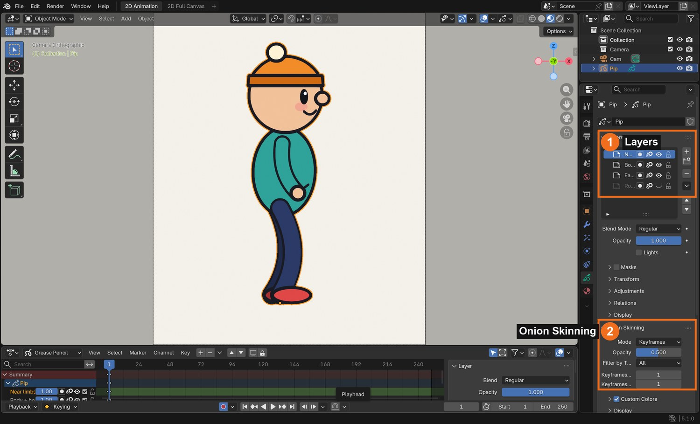
Real screenshot: Pip’s layers (1) — Near limbs, Body + head, Far limbs, Rough — and the Onion Skinning settings (2).
WHYClean layers and a fixed palette let a whole team work on one character. Darker far limbs make overlaps read instantly.
CHECKA coloured side and front view, far limbs darker, layers named and ordered, and a saved model sheet image.
FIXFill won’t fill? The line has a gap, or you are on a different layer from the line. Far arm shows through the body? Move Far limbs below Body + head.
WORKED EXAMPLE · DIFFERENT OBJECTPip’s far hoodie is #1f7a73, the near is #2fa39a.
STRETCH (AFTER THE CHECK PASSES)Add a shadow colour on one side of the body (a second fill shape).
Method basis: B2 · B4. Values and sequence are authored for this project.
Session D · Lesson 4 · mm12-26-s07-d04
The walk cycle: keys and breakdowns.
The walk is the most studied movement in animation. You will build a 24-frame cycle from four key poses.
TODAYContact and passing (35 min), down and up (30 min).
07
Key the walk: contact and passing poses
IN SHORTGround line; contact at 1; passing at 7; contact at 13 (swap legs); passing at 19.
READ ALOUD
DOCUMENT: Walk file: your character on Far / Body / Near layers SELECT: Frames 1, 7, 13, 19 TOOLS / ROUTE: Onion skin · Dope Sheet · ground line
Draw a ground line on its own layer. Your character walks in place, facing right.
Frame 1, contact: front heel just touching, back toe just leaving, legs at their widest, arms opposite to legs.
Frame 7, passing: the back leg passes the standing leg, knee up, foot just above the ground.
Frame 13: contact again with the other leg in front (copy frame 1 and swap which leg is near).
Frame 19: passing with the other leg. Frame 25 would equal frame 1, so the cycle is 24 frames.
Contact: The pose where the front heel touches down
Passing: The pose where one leg passes the other
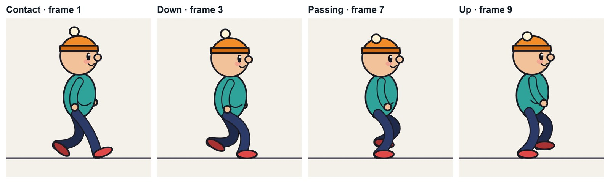
Real renders of Pip’s walk: contact (frame 1), down (3), passing (7), up (9).
WHYContact and passing are the storytelling poses: they set the stride and the attitude. Everything else is built between them.
CHECKFour key drawings at 1, 7, 13 and 19, with opposite arms and legs and the ground line respected.
FIXLegs look tangled? Colour the far leg darker. Feet below the ground? Check against the ground line with onion skin.
WORKED EXAMPLE · DIFFERENT OBJECTPip’s stride is 0.9 m; the cycle is 24 frames, 12 drawings on twos.
STRETCH (AFTER THE CHECK PASSES)Give your walk an attitude: proud (chest out) or sneaky (low, on tiptoe).
Method basis: K1 · B3. Values and sequence are authored for this project.
08
Add the down and up breakdowns, then in-betweens on twos
IN SHORTDown at 3 and 15; up at 9 and 21; in-betweens on twos; loop test.
READ ALOUD
DOCUMENT: Walk file SELECT: Frames 3, 9 (and 15, 21), then the rest on twos TOOLS / ROUTE: Onion skin before and after · Dope Sheet
Frame 3, down: just after contact, the weight lands; the body is at its lowest and the front knee bends.
Frame 9, up: the standing leg pushes; the body is at its highest, back heel lifting.
Repeat for the other side at 15 and 21.
Fill the remaining frames on twos (5, 11, 17, 23). Use onion skin before and after so each drawing sits halfway.
Play it as a loop (Playback loops automatically). The head should bob twice per cycle.
STEP CHECKLIST
GLOSSARY
Breakdown: The drawing that decides how you get from one key to the next
Cycle: An animation that loops seamlessly
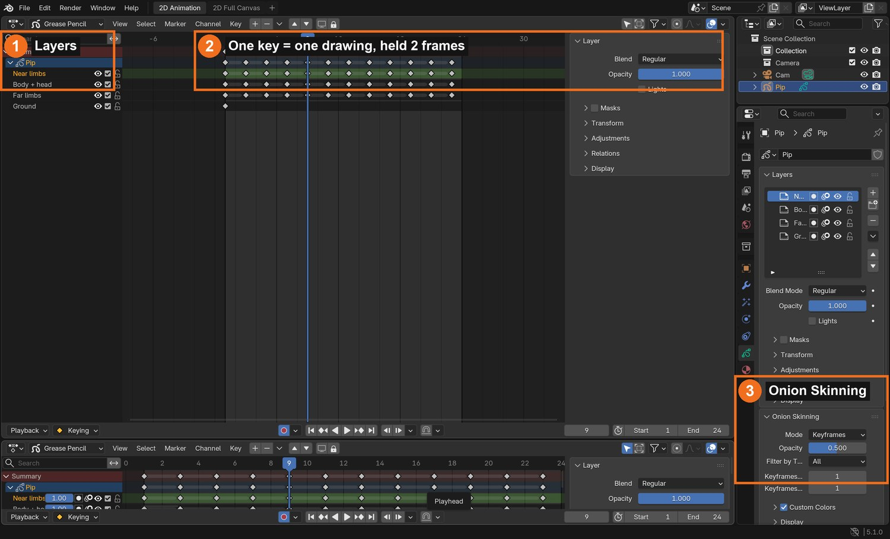
Real screenshot: Pip’s 12 walk drawings as keys on twos in the Dope Sheet (2), the layers (1), and Onion Skinning (3).
WHYDown and up give the walk weight. Without them a character glides; with them it steps.
CHECKA smooth 24-frame loop with a clear down and up on each step and a twice-per-cycle head bob.
FIXWalk looks floaty? Make the down lower. Jerky? Check each in-between sits halfway with onion skin on.
WORKED EXAMPLE · DIFFERENT OBJECTPip’s hip drops 9 cm at the down and rises 4.5 cm at the up.
STRETCH (AFTER THE CHECK PASSES)Make a run cycle: 12 frames, both feet off the ground in the middle.
Method basis: K1 · B5. Values and sequence are authored for this project.
Session E · Lesson 5 · mm12-26-s07-d05
Finish the walk. Check 2.
Add the details that make a walk feel alive, then walk your character across a background without sliding feet.
TODAYOverlap and follow-through (30 min), walk across the scene (35 min). Check 2.
09
Add follow-through: arms, head and a dragging detail
IN SHORTOpposite arms; delayed head; dragging detail; compare; save the cycle.
READ ALOUD
DOCUMENT: Walk file SELECT: Arms, head, one loose detail (hair, scarf, pom-pom) TOOLS / ROUTE: Redraw on existing keys · onion skin
Check the arms swing opposite to the legs and arc at the elbow.
Delay the head bob by a frame or so behind the hips, so the head feels carried.
Pick one loose detail (Pip’s pom-pom, a scarf, a ponytail). Make it drag behind the movement: it moves down after the body moves down, and up after.
Play it and compare with and without the delay.
Save the cycle as its own file: Walk_YourName.blend.
STEP CHECKLIST
GLOSSARY
Follow-through: Loose parts keep moving after the body stops
Overlap: Parts moving at slightly different times
WHYOverlap and follow-through are why animation feels alive: parts don’t all stop and start together.
CHECKA walk where the loose detail visibly lags the body and the arms arc naturally.
FIXDetail looks stiff? Delay it by one more drawing. Arms swing straight? Bend the elbows and draw them on an arc.
WORKED EXAMPLE · DIFFERENT OBJECTPip’s pom-pom lags about 2 frames behind the head.
STRETCH (AFTER THE CHECK PASSES)Add a bag that swings on the far shoulder.
Method basis: V1. Values and sequence are authored for this project.
10
Walk across the background without foot sliding. Check 2.
IN SHORTBackground object; repeat the cycle; key the object’s move by stride; Constant on twos; Check 2.
READ ALOUD
DOCUMENT: Shot file: background + character SELECT: The character object and a background TOOLS / ROUTE: Object location keys on twos (Constant) · copy keys in the Dope Sheet
Draw a simple background on its own Grease Pencil object (sky, ground, a few shapes). Put it behind the character (Y a little further from the camera).
Copy the walk cycle’s keys to repeat it 3 times (select in the Dope Sheet, Shift+D, move by 24 frames).
Move the whole character object across the screen with location keys. Speed = stride ÷ frames per step (Pip: 0.9 m ÷ 12 = 0.075 m per frame).
Key the object on the same twos as the drawings and set Key › Interpolation › Constant, so the body moves only when the drawing changes.
Check 2: play it. The planted foot must not slide. Your teacher signs it off.
STEP CHECKLIST
GLOSSARY
Foot slide: When a planted foot drifts across the floor
Constant interpolation: Holds a value until the next key, with no in-betweens
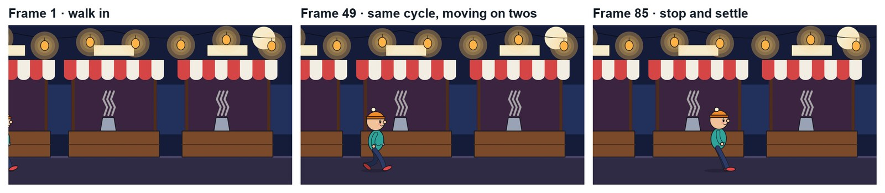
Real renders of the demo shot: Pip walks into the night market on twos and stops with a settle.
WHYFoot sliding is the most common walk mistake. Matching the move to the stride, on the same twos, is how Harmony animators lock feet to the floor.
CHECKThe cycle repeating across the background with feet that stay planted, and a teacher-signed Check 2.
FIXFeet slide forward? Move the object less per frame. Backwards? Move it more. Shimmer? The object must be keyed on twos with Constant interpolation.
WORKED EXAMPLE · DIFFERENT OBJECTPip moves 0.075 m per frame for 72 frames, then stops: the back foot comes through and the body settles with a small overshoot.
STRETCH (AFTER THE CHECK PASSES)Add a stop: plant the front foot, bring the back foot through, and settle with an overshoot.
Method basis: B5 · K1. Values and sequence are authored for this project.
Session F · Lesson 6 · mm12-26-s07-d06
Lip sync, part 1: mouth chart and sound.
Lip sync in Harmony is done with a mouth chart and drawing substitution. First you draw the chart and break down your line.
TODAYMouth chart (35 min), record and mark the line (30 min).
11
Draw a mouth chart: A–H and X
IN SHORTHead layer; Mouth layer; nine shapes on frames 1–9 in order; teeth and tongue; check.
READ ALOUD
DOCUMENT: Close-up file: front view of your character SELECT: A Mouth layer with 9 drawings TOOLS / ROUTE: Mouth layer · drawings on frames 1–9
Make a close-up file with your character’s front-view head (no mouth) on a Head layer.
Add a layer Mouth. Draw one mouth per frame on frames 1–9 in this order: X (rest), A (M B P), B (K S T EE), C (EH AE), D (AA), E (AO ER), F (OO W), G (F V), H (L).
Keep the mouth the same width and in the same place across all nine, using onion skin.
Add teeth and a tongue where they show (B, C, D, H).
Play frames 1–9 slowly to check the shapes read clearly.
STEP CHECKLIST
GLOSSARY
Mouth chart: A set of standard mouth drawings for lip sync
Phoneme: A sound in speech, such as OO or M
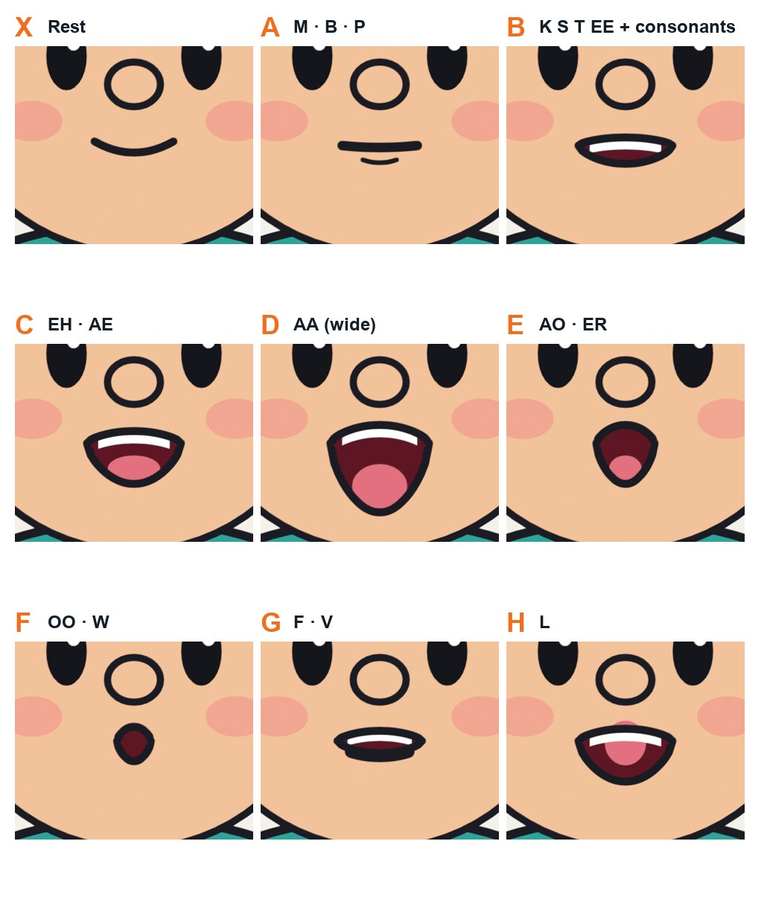
Real renders of Pip’s mouth chart: the nine standard shapes used by Harmony’s lip-sync and by Rhubarb Lip Sync.
WHYStudios use a fixed set of mouth shapes so lip sync is fast and consistent. These nine (A–H, X) are the Preston Blair set that Harmony uses.
CHECKNine clear mouth drawings on frames 1–9 of a Mouth layer, in the standard order, consistent in size and position.
FIXShapes look alike? Exaggerate the differences: D is very open, F is a small round pucker, A is closed and pressed.
WORKED EXAMPLE · DIFFERENT OBJECTPip’s chart: X rest, A closed, B teeth, C open, D wide, E round, F pucker, G teeth on lip, H tongue up.
STRETCH (AFTER THE CHECK PASSES)Draw an extra “angry” version of the C and D mouths.
Method basis: T1 · R1. Values and sequence are authored for this project.
12
Record your line and mark its sounds on the timeline
IN SHORTWrite and record a WAV line; add sound strip; Sync to Audio and scrubbing; markers with letters; Xsheet.
READ ALOUD
DOCUMENT: Your 2–4 second line (WAV), recorded in class SELECT: A sound strip and timeline markers TOOLS / ROUTE: Sequencer › Add › Sound · Playback › Sync to Audio, Scrubbing · M marker, F2 rename
Write a 2–4 second line for your character. Record it with a phone or the classroom mic and save it as WAV in your project folder.
Change one area to the Video Sequencer and choose Add › Sound. Start it a little after the cut to the close-up.
In the Timeline, set Playback › Sync to Sync to Audio, and turn on Scrubbing so you hear the sound while dragging the playhead.
Scrub slowly. At each new sound, press M to add a marker and F2 to name it with the mouth letter (for example F for “oo”).
Write the frame numbers and letters on the Xsheet template (in the templates zip).
STEP CHECKLIST
GLOSSARY
Xsheet (exposure sheet): A frame-by-frame chart of sound and drawings
Scrubbing: Dragging the playhead to hear the sound
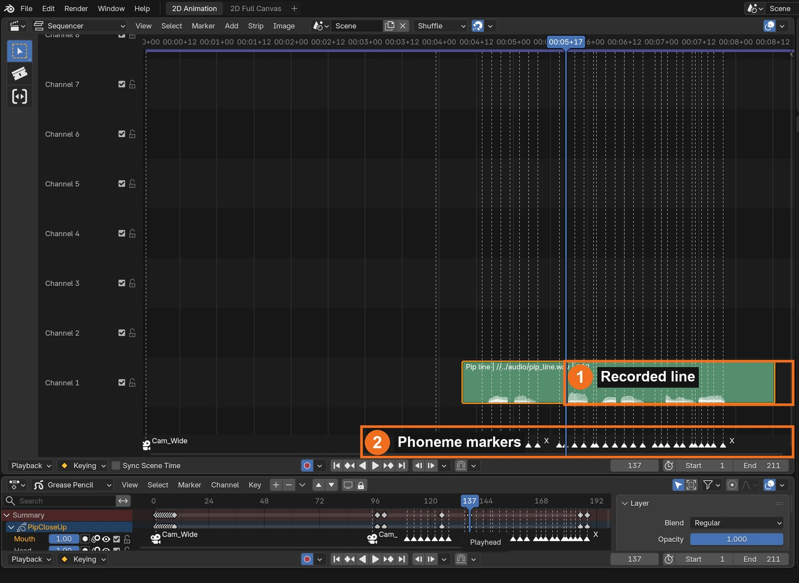
Real screenshot: the recorded line as a sound strip (1) and phoneme markers named with mouth letters (2).
WHYLip sync follows sounds, not spelling: “through” is B-E-F. Marking first, then animating, is exactly how Harmony’s Xsheet workflow works.
CHECKYour line in the sequencer, synced to audio, with a marker named for each mouth change.
FIXNo sound when scrubbing? Turn on Playback › Scrubbing. Sound drifts out of sync? Set Sync to Audio. Markers in the wrong place? Select and press G.
WORKED EXAMPLE · DIFFERENT OBJECTPip’s line “Noodles! Hot noodles, coming through!” is 4.25 s. The demo voice is synthetic; yours is your own recording.
STRETCH (AFTER THE CHECK PASSES)Use Rhubarb Lip Sync to generate the letters automatically, then compare with yours.
Method basis: B7 · B8. Values and sequence are authored for this project.
Session G · Lesson 7 · mm12-26-s07-d07
Lip sync, part 2: drawing substitution and acting.
Swap the mouth drawings in time with your markers, then add the acting that sells the line.
TODAYDrawing substitution (35 min), blinks, brows and a head move (30 min).
13
Lip sync with the Time Offset modifier (drawing substitution)
IN SHORTTime Offset, Fixed Frame, Layer = Mouth; key Frame at each marker; Constant; nudge earlier.
READ ALOUD
DOCUMENT: Close-up file SELECT: The Mouth layer, driven by a modifier TOOLS / ROUTE: Add Modifier › Edit › Time Offset · Mode: Fixed Frame · Influence › Layer · I to key · Interpolation › Constant
Select the character object. Add Modifier › Edit › Time Offset. Set Mode to Fixed Frame and Influence › Layer to Mouth.
Now the Frame number chooses which mouth shows: 1 = X, 2 = A, 3 = B … 9 = H.
At each marker, set Frame to the mouth number, hover over it and press I to key it.
In the Dope Sheet or Graph Editor, select all the modifier keys and choose Key › Interpolation Mode › Constant, so mouths swap instantly.
Play with sound. Shift each mouth one or two frames earlier if it feels late: eyes read the mouth just before the sound.
STEP CHECKLIST
GLOSSARY
Drawing substitution: Swapping between existing drawings instead of drawing new ones
Fixed Frame: Time Offset mode that always shows one chosen drawing
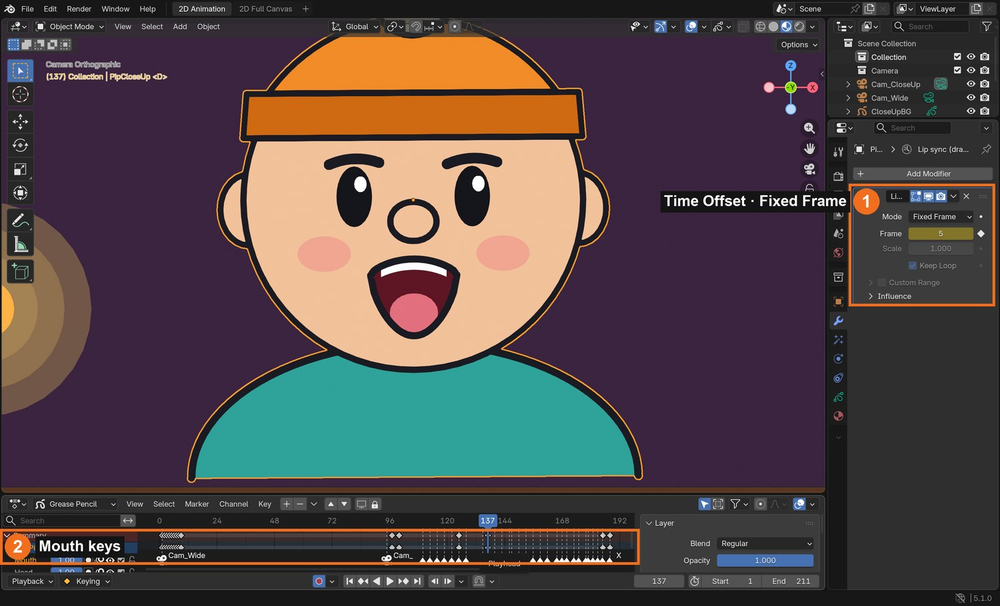
Real screenshot: the lip-sync Time Offset modifier in Fixed Frame mode with its Frame keyed (1); the mouth keys on the timeline (2).
WHYThis is Harmony’s drawing substitution: one set of mouth drawings, swapped in time. It is fast, consistent and easy to change.
CHECKA mouth that changes on your markers, with Constant keys, reading in sync (or one frame early) with the sound.
FIXHead disappears? Set Influence › Layer to Mouth so only the mouth is affected. Mouths blend or flicker? Interpolation must be Constant.
WORKED EXAMPLE · DIFFERENT OBJECTPip’s line uses 28 mouth changes over 102 frames.
STRETCH (AFTER THE CHECK PASSES)Hold the mouth a little longer on the stressed word (“HOT”) for emphasis.
Method basis: B6. Values and sequence are authored for this project.
14
Act the line: blinks, brows and a head move
IN SHORTBlink; brows on key word; anticipation dip; keep it small; check meaning.
READ ALOUD
DOCUMENT: Close-up file SELECT: Head drawings and the object’s rotation TOOLS / ROUTE: New Head drawings · object rotation keys on twos (Constant)
Add a blink: on the Head layer draw closed eyes for 2–4 frames, early in the shot and once near the end.
Raise the brows on the most important word (draw new Head drawings there).
Add anticipation: just before the first word, dip the head slightly, then lift it on the word (object rotation and location keys, on twos, Constant).
Keep moves small: the face is close to the camera.
Play the line and check that eyes, brows and head support the meaning.
STEP CHECKLIST
GLOSSARY
Anticipation: A small opposite move before the main action
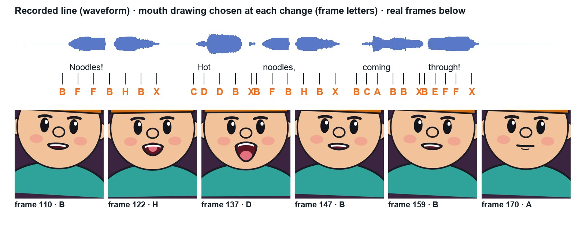
From the demo: the waveform of the recorded line, the mouth letter at each change, and real frames of Pip saying it.
WHYAnimators say “the eyes are the window”. A blink and a brow move on the right word make a talking head feel like it is thinking.
CHECKAt least one blink, a brow move on the key word, and an anticipation dip before the line.
FIXHead move looks like sliding? Key it on twos with Constant, like the walk. Too busy? Remove moves until each one has a reason.
WORKED EXAMPLE · DIFFERENT OBJECTPip dips 3° and 6 cm before “Noodles!”, then lifts 4° on the word.
STRETCH (AFTER THE CHECK PASSES)Add a quick head turn mid-line with two in-between drawings.
Method basis: V1. Values and sequence are authored for this project.
Session H · Lesson 8 · mm12-26-s07-d08
Assemble the shot.
Put it all together: walk in, stop, cut to the close-up, say the line.
TODAYCameras, cut and render test (65 min).
15
Assemble the shot: two cameras, a cut and sound
IN SHORTWide and close-up in one file; two cameras; bind cameras to markers; FFmpeg with AAC; test render.
READ ALOUD
DOCUMENT: Shot file: wide set + close-up set + your sound SELECT: Two cameras bound to markers TOOLS / ROUTE: Marker › Bind Camera to Markers (Ctrl+B) · Output: FFmpeg H.264 + AAC
Put the walk (wide) and the close-up head in the same file, side by side (the close-up set can be far to one side).
Add a camera for each: Cam_Wide and Cam_CloseUp, both Orthographic.
At frame 1, select Cam_Wide and press Ctrl/Cmd+B in the Timeline (Bind Camera to Markers). At the cut frame, do the same for Cam_CloseUp.
The finished demo shot (real Blender render, 9 seconds, with sound). The voice is a synthetic computer voice.
STEP CHECKLIST
GLOSSARY
Cut: An instant change from one camera to another
Wide shot: A shot showing the whole scene
WHYA cut from wide to close-up is basic film grammar: the wide shows where we are, the close-up shows what the character thinks.
CHECKA test render that walks in, cuts to the close-up and plays your line in sync, plus a list of three fixes.
FIXRender has no sound? Set the audio codec to AAC. Camera doesn’t switch? The marker needs a bound camera (Ctrl/Cmd+B with the camera selected).
WORKED EXAMPLE · DIFFERENT OBJECTThe demo cuts at frame 95; the line starts at frame 103 and the shot ends at 211.
STRETCH (AFTER THE CHECK PASSES)Add a third shot: a reaction from another character.
Method basis: B8. Values and sequence are authored for this project.
Session I · Lesson 9 · mm12-26-s07-d09
The director changes the brief.
The director likes the shot, then gives you a note. You decide how to deliver it.
TODAYIndependent changed brief (65 min).
16
Practical check: the director’s note
IN SHORTRead the card; plan; change a copy; test; explain.
READ ALOUD
DOCUMENT: Your shot · the director’s card SELECT: Whatever the card requires TOOLS / ROUTE: Your own decisions
Read your director’s card (below).
Plan which parts must change: walk drawings, timing, mouth chart, markers, substitution keys, acting or cameras.
Make the changes in a copy of your file (PaperMoon_YourName_v2.blend).
Render a test and check sync.
Write three sentences: what changed, which tools you used and why, and what you would polish next.
Card
The director says
1 · Exhausted
“They’ve walked all day: slow, heavy walk, with a bigger down.”
2 · New line
“Change the line: record a new 3-second line and re-sync it.”
3 · Stumble
“They trip on something halfway, then recover.”
4 · Happy bounce
“Make it a bouncy, happy walk, and smile through the line.”
Independent evidence: the main achievement evidence for the sprint.
STEP CHECKLIST
GLOSSARY
Director’s note: A change requested after review
WHYA shot built with cycles, substitution and markers can be changed quickly. Doing it on your own shows you understand the system.
CHECKA v2 shot that meets the card, a test render, and an explanation naming the tools you chose.
FIXStuck? Change one system at a time and test after each. (Independent step: the Coach can explain tools but not decide your changes.)
WORKED EXAMPLE · DIFFERENT OBJECTWorked example on a different shot: a “whisper” note made a student redraw C and D smaller, re-record the line quietly and slow the walk.
STRETCH (AFTER THE CHECK PASSES)Take two cards at once.
Method basis: B5 · B6. Values and sequence are authored for this project.
Session J · Lesson 10 · mm12-26-s07-d10
Render and screen. Check 3.
Render the final shot with sound, screen it and defend your choices.
TODAYRender (25 min), screening and defence (40 min).
17
Render the final shot and defend it. Check 3.
IN SHORTRender at 100 %; check the MP4; screen; defend; Check 3; portfolio.
K1 Richard Williams. The Animator’s Survival Kit (Faber, 2001): walks and timing. Book, in the classroom library if available. https://www.faber.co.uk/
Photo credits
Figures marked Illustration are drawn, not screenshots. Step values are starting points authored for this project. Draft for teacher review; not yet classroom-piloted.